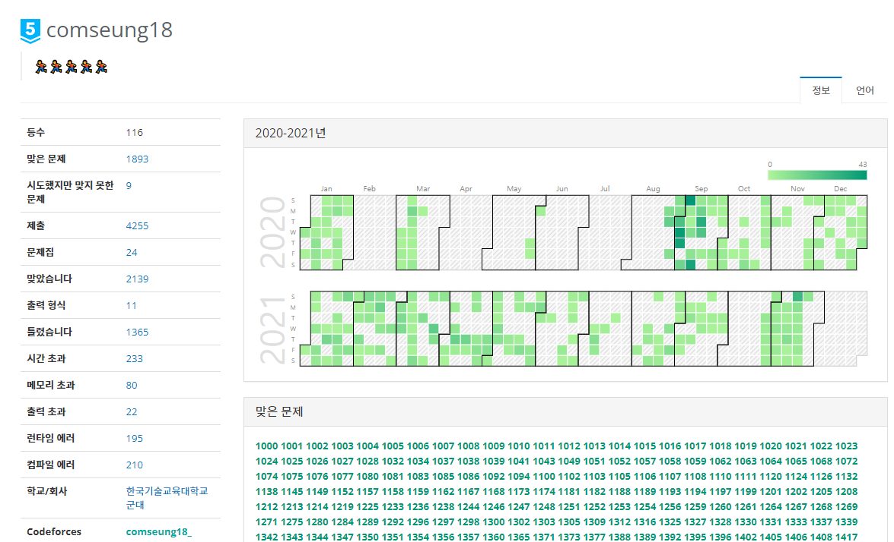

안녕
나는 한국기술교육대학교의 컴퓨터공학부 2학년을 마치고 휴학중인 원승주라고 해
이번에 길다면 길고 짧다면 짧은 시간동안 강의(?)를 하게 되어서 이렇게 홈페이지 만들게 되었어 ㅎ.ㅎ 나도 웹 공부도 하고
컴퓨터 관련된 장점?
1. 알고리즘에 자신이 있다.
백준에서 100문제정도 풀게 되면 순위가 25,000 등 정도되는데, 
알고리즘 관련 문제를 꾸준히 풀어서 상위권에 있고 기업코딩테스트 만큼은 큰 걱정하지 않아도 되는 실력이라고 생각해.
2. 컴공으로서 다양한 경험을 했다.
다른 컴퓨터공학부 학생들이라면 다들 가지고 있는 장점일텐데,
- C
- C++
- C#
- Java
- Python
- Javascript
Item 2